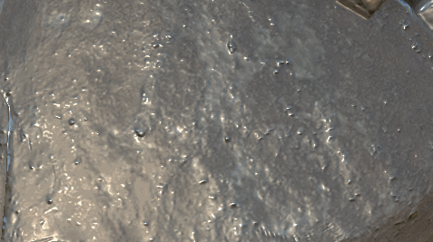
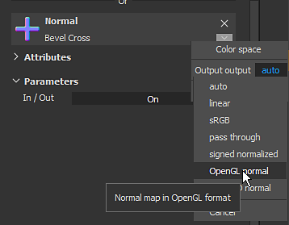
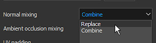
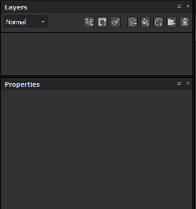
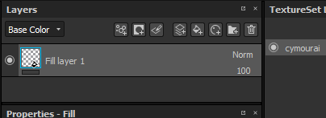
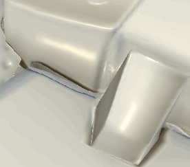

Painting details can be done by painting directly Normal map data directly on the mesh. This page regroups different way to manage normal map painting.
To paint normal map details:
From there, painting with a normal map is very similar to Height Map Painting , with the added precision of a baked normal.

Normal maps have their own blending modes in the layer stack:
To learn about them see the Blending modes page.
When loading a normal map into the slot of a material (tool properties or fill layer), it is possible to change the default color space.
This setting can be used to specify the Normal map format since by default a DirectX (Y-) normal map is expected (it is not affected by the project setting). Therefore when using an OpenGL (Y+) normal map, it is required to click on the little arrow to open the color space menu and then change the color space of the bitmap.

In some situations, it can be useful to be able to paint over the baked normal map in order to hide details (or even fix baking issues).
The default setup of a project in Substance 3D Painter doesn't allow that, as it computes the normal channel and the baked normal separately. This behavior can be changed via the Texture Set settings .
By default a Texture Set is created with the normal mixing setting set to combine .
In order to override/paint the normal map it is important to set this setting to replace instead. The normal map will disappear from the viewport, but that is expected. Changing this mode to replace indicates to Substance 3D Painter to only take into account the normal channel and the height channel when generating the final normal map.

Create a new fill layer and put the baked normal inside the "normal" slot, via the properties panel. Don't forget to change the default tilling of the fill layer if it not set to 1.

By default, the blending mode of the normal channel on any new layer is set to "Normal map details". Since it is preferable to use the fill layer as the base, we chose the "normal" blending mode since the bitmap don't have any alpha, it will replace everything below (including the default color of the shader).

Create a new layer (regular or fill) and change its blending mode to "normal" for the normal channel. Once this setup is done, anything painted on the normal channel will take over the baked normal map that is on the layer below.
